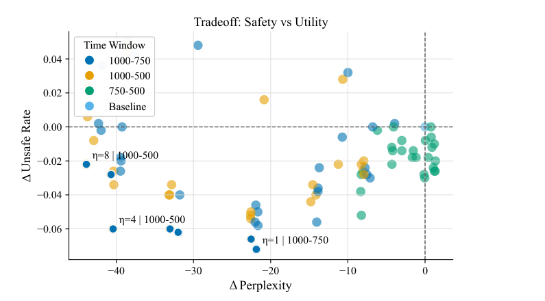

Paper: Amman Yusuf, Zhejun Jiang, Mijung Park. The Safety-Aware Denoiser for Text Diffusion Models. ICML 2026 (PMLR 306, Poster). arXiv:2605.08116 · OpenReview · Code
TL;DR
Text diffusion models (TDMs) like LLaDA and MDLM generate text by iteratively denoising a fully masked sequence in parallel — which makes them fast, but also makes autoregressive-era safety tooling (post-hoc filters, decoding constraints) a poor fit. Diffusion-native jailbreaks such as DIJA and PAD reach near-100% attack success rates on instruction-tuned TDMs.
This paper proposes the Safety-Aware Denoiser (SAD): a training-free modification of the denoising step that steers each intermediate sample away from a small negation set of known-unsafe reference texts. It is the discrete-text adaptation of the safe denoiser of Kim et al. (NeurIPS 2025), originally developed for image diffusion. Across hazard taxonomy, jailbreak, and memorization evaluations, SAD consistently reduces unsafe generations (e.g., PAD attack ASR on LLaDA-1.5 drops from 43.6% → 29.0%) at essentially no cost to benign generation quality, and with only ~20% throughput overhead.
Why this problem matters
TDMs are no longer a curiosity — LLaDA-8B beats LLaMA3-8B on some reasoning benchmarks, and Dream, MMaDA, and DiffuCoder are scaling the paradigm. But almost all safety infrastructure assumes left-to-right decoding:
- Post-hoc filtering only sees the final output; it can’t undo an unsafe trajectory the sampler committed to early.
- AR jailbreak defenses don’t transfer: DIJA exploits bidirectional infilling by “baking in” a malicious context around a masked span, forcing the model to complete it harmfully for consistency. PAD exploits parallel decoding directly.
- Retraining or safety fine-tuning is expensive and inflexible, especially as frozen checkpoints proliferate and safety requirements evolve.
So the target is a lightweight, inference-time mechanism that acts inside the denoising loop.
Background: the safe denoiser
The starting point is Theorem 3.2 of Kim et al. (2025). Partition the data distribution into safe and unsafe parts, \(\mathcal{D} = \mathcal{D}_\text{safe} \cup \mathcal{D}_\text{unsafe}\). Then the safe denoiser can be written in terms of the model’s ordinary denoiser and an unsafe denoiser:
\[ \mathbb{E}_{\mathcal{D}_\text{safe}}[x_0 \mid x_t] = \mathbb{E}_{\mathcal{D}}[x_0 \mid x_t] + \beta^*(x_t)\left(\mathbb{E}_{\mathcal{D}}[x_0 \mid x_t] - \mathbb{E}_{\mathcal{D}_\text{unsafe}}[x_0 \mid x_t]\right) \]
where \(\beta^*(x_t) \ge 0\) grows with the posterior likelihood that the current state \(x_t\) originated from the unsafe set. Intuitively: subtract the “unsafe direction” from the model’s prediction, with a weight that adapts to how unsafe the current state looks. The pretrained model already gives \(\mathbb{E}_{\mathcal{D}}[x_0 \mid x_t]\); the two remaining quantities are approximated from a finite set of unsafe references.
This is provable guidance toward the safe distribution — not a heuristic token penalty — which is the paper’s main conceptual distinction from DiffuGuard.
Method: adapting the safe denoiser to masked text diffusion
The original safe denoiser lives in continuous space with Gaussian forward kernels. The paper’s technical contribution is porting it to masked (absorbing-state) discrete diffusion:
1. Unsafe denoiser via Monte Carlo. Given \(N\) unsafe reference sequences \(x^{(1)}, \dots, x^{(N)}\) (e.g., ToxiGen samples, copyrighted documents, training data):
\[ \hat{\mathbb{E}}_{\mathcal{D}_\text{unsafe}}[x_0 \mid x_t] = \sum_{n=1}^{N} x^{(n)} \frac{q_t(x_t \mid x^{(n)})}{\sum_{m} q_t(x_t \mid x^{(m)})} \]
2. A discrete kernel replaces the Gaussian. The key derivation is the sequence-level forward transition probability under masked diffusion. Since tokens are corrupted independently, it factorizes into a simple closed form:
\[ q_t(x_t \mid x_0) = \alpha_t^{\#\{\text{matching positions}\}} (1-\alpha_t)^{\#\{\text{masked positions}\}} \]
This is computable in \(O(L)\) per reference by just counting matches and masks — no gradients, no auxiliary classifier.
3. Approximating \(\beta^*\). The exact weight is intractable (its denominator integrates over the entire safe distribution), so it is approximated as \(\eta \cdot \frac{1}{N}\sum_n q_t(x_t \mid x^{(n)})\) with a tunable strength \(\eta\), applied only during a time window \(C\) early in denoising (guidance that runs too long or too late degrades quality — consistent with prior guided-diffusion findings).
4. Prompt-agnostic negation. When generating conditioned on a prompt, SAD acts only on the continuation tokens and evaluates the negation set with an empty prompt. This makes a single negation set work universally across test prompts — including adversarial jailbreak prompts whose distribution can’t be anticipated. A nice modularity decision.
The whole thing is ~4 extra lines in the sampling loop (Algorithm 1 in the paper).
Experiments
Three safety dimensions, on MDLM and the LLaDA/Dream family:
Hazardous generation (RealToxicityPrompts, judged by Llama-Guard-3-8B). SAD cuts unsafe rate by ~5–6 points absolute (MDLM: 38.4% → 32.6%; LLaDA: 19.8% → 14.8%) while BERTScore on benign prompts is essentially unchanged. The negation set matters: matching the negation distribution to what you want to avoid (RTP-as-negation for RTP prompts) works best.

Jailbreaks (DIJA, PAD, zero-shot; WildJailbreak/HarmBench/etc.). The largest gains are against PAD, the parallel-decoding attack: on LLaDA-1.5, HarmBench ASR drops 43.6% → 29.0% with SAD alone, and SAD still adds 10–17% relative reduction on top of DiffuGuard’s audit-and-repair. Gains against DIJA are modest (1–7 points) — more on that below. Importantly, SAD composes cleanly with existing defenses (PPL filtering, self-reminder, DiffuGuard).
Memorization (MDLM fine-tuned on WikiText-103). Setting \(\mathcal{D}_\text{unsafe} = \mathcal{D}_\text{train}\) turns SAD into a privacy mechanism: fuzzy 10-gram overlap with training data drops well below the 18.6% baseline as \(\eta\) grows, with BERTScore degrading only 0.515 → 0.511. Under the stronger \((n,p)\)-discoverable extraction framework, mem@50% under random 10% masking falls from 62.2% → 11.0%. This dual-use of the same mechanism for both toxicity and privacy is one of the more elegant aspects of the paper.
Cost. Against training-free baselines on MDLM, SAD matches FK Steering (\(k{=}8\)) safety at 34× lower wall-clock (18 min vs 8.7 hr on their setup) and with better perplexity (34.6 vs 42.6). Throughput overhead is driven by the number of active guidance steps, not the negation set size — going from 100 to 5,000 references changes throughput by at most 2.3%.
Ablations worth remembering:
- \(\eta\) is a clean monotonic safety knob once the schedule is fixed.
- The time window \(C\) has the largest qualitative effect: short, early activation preserves utility; windows past the first quarter of denoising do little.
- Safety gains saturate at \(N \approx 500\text{–}1000\) references; beyond that, performance slightly degrades due to weight dilution in the softmax over references.
Strengths
- Principled, not heuristic. SAD inherits a formal guarantee from the safe denoiser theorem, in contrast to DiffuGuard’s heuristic audit-and-repair. The discrete kernel factorization is simple but is exactly the piece that couldn’t be ported from the image domain.
- Genuinely lightweight. Training-free, gradient-free, classifier-free, \(O(L)\) per reference, sub-linear in negation set size, and a single negation set works across prompts. The FK Steering comparison (equal safety at 1/34th the cost) is the most persuasive result in the paper.
- One mechanism, three threat models. Hazard reduction, jailbreak robustness, and memorization/privacy all fall out of the same negative-guidance primitive by swapping the negation set. The practitioner story — “curate ~500–1000 examples of what you don’t want” — is refreshingly concrete.
- Honest evaluation. The appendix carefully dissects the cases where SAD increases the measured unsafe rate (classifier artifacts from output-style shifts, run-to-run variance) and reports refusal rates alongside ASR to disambiguate genuine failures from judge false positives.
Weaknesses / open questions
- Weak against DIJA. SAD shines against PAD but barely dents DIJA (e.g., 59.5% → 57.4% on LLaDA-Instruct). The authors’ framing — SAD works best on “attacks whose ASR depends on early trajectory commitment” — is fair, but it means the strongest known TDM jailbreak remains largely unmitigated by this method alone. PPL filtering does most of the work there.
- Coverage is bounded by the negation set. The Monte Carlo unsafe denoiser can only push away from lexically similar sequences — the kernel counts exact token matches. Paraphrased or novel unsafe content that doesn’t resemble any reference should slip through. This is acknowledged implicitly (negation-set choice matters) but never stress-tested with, say, paraphrase attacks on the negation set.
- The theory–practice gap around \(\beta^*\). The provable guarantee holds for the exact \(\beta^*(x_t)\); in practice it’s replaced by a constant \(\eta\) inside a hand-tuned time window, with \(\eta\) ranging from 0.5 to 128 across experiments. The “provably safe” framing should be read with that asterisk — what’s provable is the decomposition, not the deployed approximation.
- A curious side effect on refusals. In the zero-shot jailbreak setting, SAD drops refusal rates dramatically (LLaDA-Instruct: 87.4% → 6.6%) while keeping ASR roughly flat — i.e., the model answers instead of refusing, just not harmfully. The paper frames this as reduced over-refusal, which is plausible, but it deserves a closer behavioral analysis than a footnote: are those answers actually helpful, or borderline?
- Scale. Experiments top out at 8B models and \(N{=}5000\) references. Whether a fixed reference set can cover the unsafe modes of a much more capable TDM is untested.
My take
This is a solid “right tool, right paradigm” paper. The core idea is a transplant from image diffusion, but the transplant is done carefully — the discrete kernel derivation, the prompt-agnostic negation design, and the time-window scheduling are the kind of details that make an inference-time method actually usable. The efficiency result against particle-based steering (FK Steering) is the headline for practitioners: negative guidance from a finite reference set is cheap in the masked-diffusion setting because the forward kernel is just match-counting.
The bigger question the paper leaves open is whether reference-based negative guidance can ever be a primary defense rather than a complementary one. Its blind spot — unsafe content that is semantically harmful but lexically far from every reference — is exactly where DIJA-style attacks live. A natural follow-up is replacing the token-matching kernel with a semantic kernel (embeddings, or the model’s own hidden states à la ILRR) while keeping the safe-denoiser decomposition. If that works, this line of research could give TDMs a safety story that AR models arguably still lack: a defense that acts on the entire generation trajectory rather than on tokens after the fact.
Verdict: a well-executed first principled step for diffusion-native text safety — best understood as one strong layer in a defense stack, and a foundation clearly worth building on.
Peer review at a glance
SAD was accepted as a Poster at ICML 2026. The scores (via Paper Copilot’s open dataset; ICML review text is not publicly posted, and OpenReview now requires sign-in):
| Recommendation | Confidence | Soundness | Significance | Originality | Presentation | |
|---|---|---|---|---|---|---|
| Reviewer 9T1S | 4 | 3 | 3 | 3 | 2 | 3 |
| Reviewer YM1a | 4 | 3 | 3 | 4 | 3 | 3 |
| Reviewer pAtC | 4 | 2 | 2 | 3 | 2 | 2 |
| Reviewer ddgR | 4 | 3 | 3 | 3 | 3 | 3 |
| Average | 4.0 | 2.75 | 2.75 | 3.25 | 2.5 | 2.75 |
My reading of the numbers (the text itself isn’t public, so this is interpretation): the mirror image of its sibling paper SGF’s divisive 4-to-10 spread — a perfectly uniform consensus accept, with no champion and no detractor. Reviewers rated significance (3.25) clearly above originality (2.5), which matches my own read: the safety problem in text diffusion is real and timely, but the method is a careful transplant of an existing theorem to a new domain rather than a new idea. Consensus-without-a-champion is the classic profile of a solid poster.